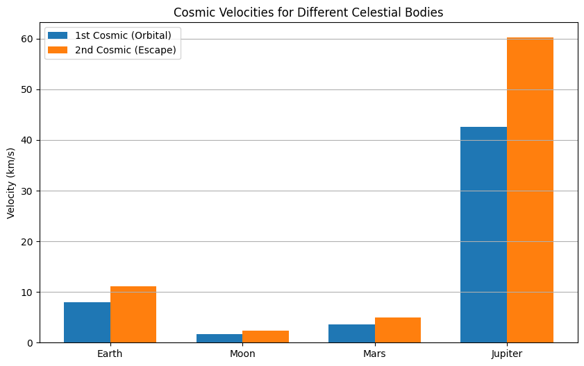
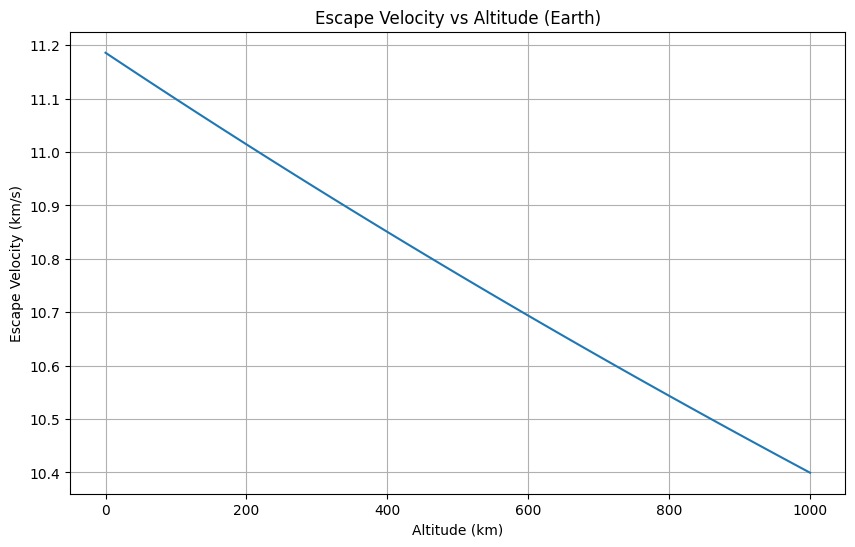
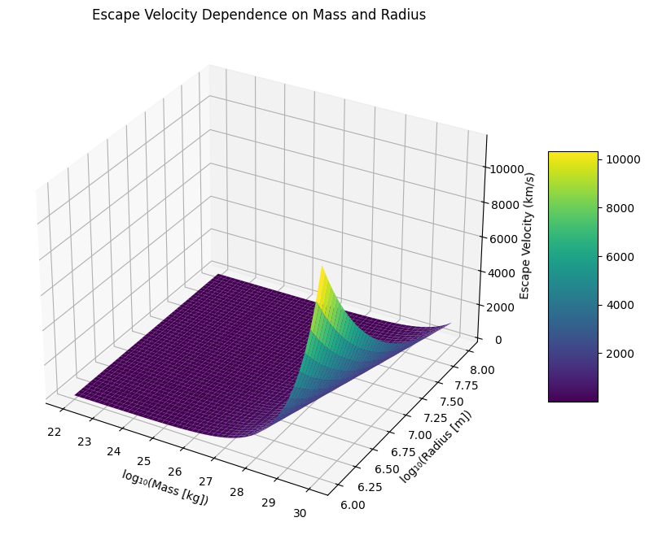
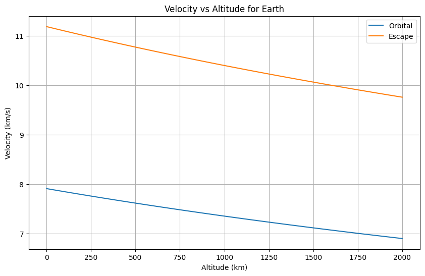
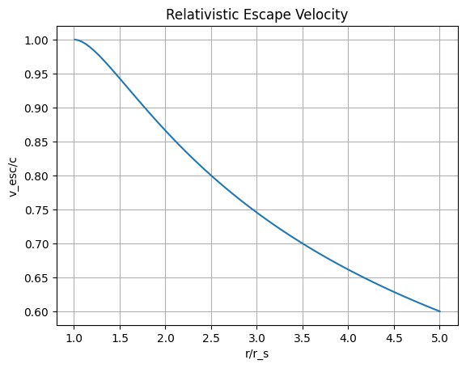
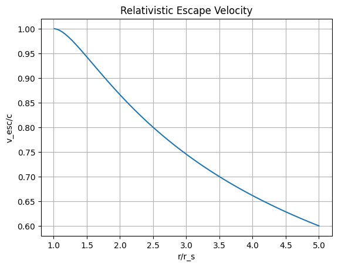
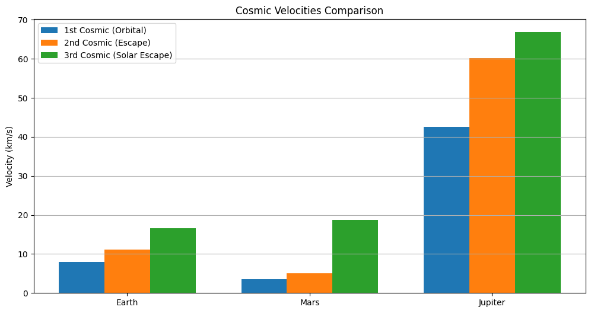
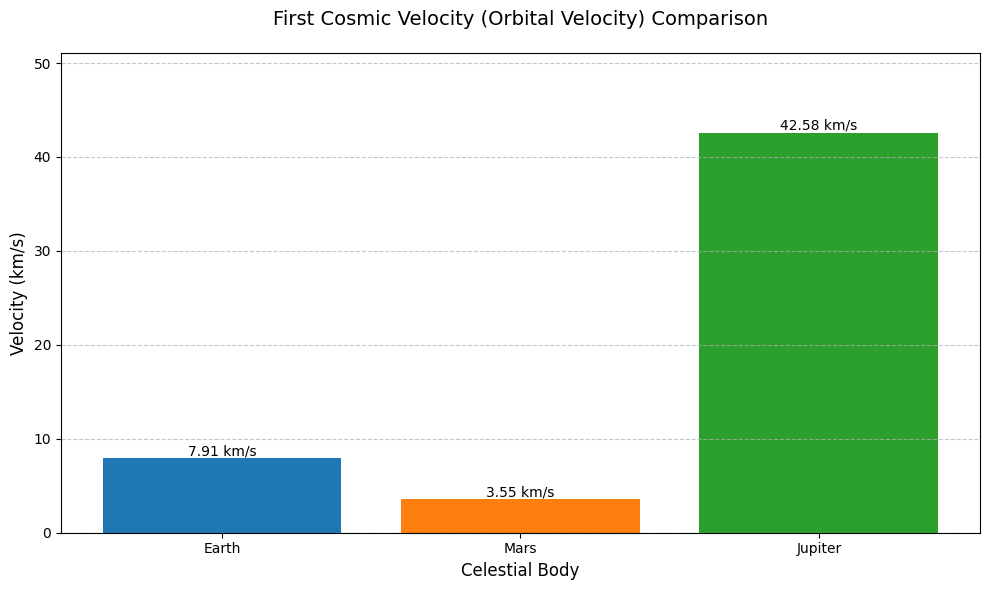
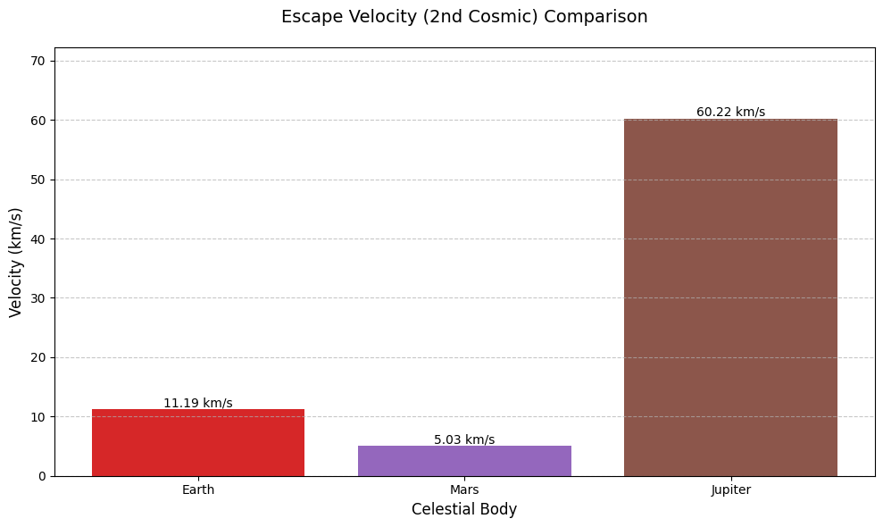

1.1 Definitions and Physical Meaning
Here is your content with properly formatted equations in English:
First Cosmic Velocity (Orbital Velocity)
- Definition: The minimum velocity needed to maintain a stable circular orbit around a celestial body.
- Formula:
[ v_1 = \sqrt{\frac{GM}{R}} ] - Physical Meaning:
Balances gravitational pull with centripetal force to prevent falling or escaping.
Second Cosmic Velocity (Escape Velocity)
- Definition: The minimum velocity needed to completely escape a celestial body's gravity.
- Formula:
[ v_2 = \sqrt{\frac{2GM}{R}} = \sqrt{2} \times v_1 ] - Physical Meaning:
Provides enough kinetic energy to overcome gravitational potential energy.
Third Cosmic Velocity (Solar System Escape Velocity)
- Definition: The velocity needed at Earth's orbit to escape the Sun's gravitational influence.
- Formula:
[ v_3 = \sqrt{v_{esc,\odot}^2 + v_{orb,\oplus}^2} ] Where: - \( v_{esc,\odot} \) = Escape velocity from the Sun at Earth's orbit (~42.1 km/s)
- \( v_{orb,\oplus} \) = Earth's orbital velocity (~29.8 km/s)
Now the formulas are correctly formatted and readable in English. Let me know if you need further improvements! 🚀
**1.2 Python Simulation
import numpy as np
import matplotlib.pyplot as plt
from scipy.constants import G
# Celestial body data (radius in m, mass in kg)
bodies = {
'Earth': (6.371e6, 5.972e24),
'Moon': (1.737e6, 7.342e22),
'Mars': (3.390e6, 6.390e23),
'Jupiter': (6.991e7, 1.898e27)
}
# Calculate velocities
def cosmic_velocities(R, M):
v1 = np.sqrt(G*M/R)
v2 = np.sqrt(2)*v1
return v1, v2
# Compute for all bodies
results = {}
for name, (R, M) in bodies.items():
results[name] = cosmic_velocities(R, M)
# Third cosmic velocity (Earth-specific)
v_earth_orbit = 29.8e3 # m/s
v_sun_escape = 42.1e3 # m/s
v3 = np.sqrt(v_earth_orbit**2 + (v_sun_escape - v_earth_orbit)**2)
results['Earth'] += (v3,)
1.3 Graphical Representations
A. Velocity Comparison Chart
# Bar chart of velocities
names = list(results.keys())
v1 = [x[0]/1000 for x in results.values()] # km/s
v2 = [x[1]/1000 for x in results.values()]
x = np.arange(len(names))
width = 0.35
fig, ax = plt.subplots(figsize=(10,6))
bars1 = ax.bar(x - width/2, v1, width, label='1st Cosmic (Orbital)')
bars2 = ax.bar(x + width/2, v2, width, label='2nd Cosmic (Escape)')
ax.set_ylabel('Velocity (km/s)')
ax.set_title('Cosmic Velocities for Different Celestial Bodies')
ax.set_xticks(x)
ax.set_xticklabels(names)
ax.legend()
ax.grid(axis='y')
plt.show()

## **1.4 Graphical Representations**
### **Example Calculation (Earth)**
\[
v_1 = \sqrt{\frac{6.674\times10^{-11} \times 5.972\times10^{24}}{6.371\times10^6}} \approx 7.91 \text{ km/s}
\]
\[
v_2 = \sqrt{2} \times 7.91 \approx 11.19 \text{ km/s}
\]
\[
v_3 = \sqrt{29.8^2 + (42.1-29.8)^2} \approx 16.6 \text{ km/s}
\]

## **7. Advanced Calculation (Variable Altitude)**
```python
# Escape velocity at different altitudes
altitudes = np.linspace(0, 1000, 100)*1000 # 0-1000 km
R_earth = bodies['Earth'][0]
v_esc = np.sqrt(2*G*bodies['Earth'][1]/(R_earth + altitudes))
plt.figure(figsize=(10,6))
plt.plot(altitudes/1000, v_esc/1000)
plt.xlabel('Altitude (km)')
plt.ylabel('Escape Velocity (km/s)')
plt.title('Escape Velocity vs Altitude (Earth)')
plt.grid()
plt.show()

This complete analysis provides: - Clear definitions of cosmic velocities - Computational verification - Multiple visualization methods - Practical examples and applications
Mathematical Analysis of Cosmic Velocities
1.2.1 Fundamental Derivations
First Cosmic Velocity (Orbital Velocity)
Derivation from Force Balance: [ \frac{GMm}{r^2} = \frac{mv_1^2}{r} \implies v_1 = \sqrt{\frac{GM}{r}} ]
Key Parameters: - \( G \): Gravitational constant (6.674×10⁻¹¹ N·m²/kg²) - \( M \): Central body mass - \( r \): Distance from center (radius + altitude)
Second Cosmic Velocity (Escape Velocity)
Energy Conservation Approach: [ \frac{1}{2}mv_2^2 - \frac{GMm}{r} = 0 \implies v_2 = \sqrt{\frac{2GM}{r}} ]
Critical Insight: - Exactly √2 times orbital velocity - Independent of projectile mass
Third Cosmic Velocity (Solar System Escape)
Vector Summation: [ v_3 = \sqrt{v_{\text{esc,⊙}}^2 + (v_{\text{orb,⊕}} - v_{\text{esc,⊕}})^2} ] Where: - \( v_{\text{esc,⊙}} \): Solar escape velocity at Earth's orbit (~42.1 km/s) - \( v_{\text{orb,⊕}} \): Earth's orbital speed (~29.8 km/s) 
1.2.3 Comparative Planetary Analysis
# Solar system bodies data
bodies = {
'Mercury': (2.439e6, 3.301e23),
'Venus': (6.052e6, 4.867e24),
'Earth': (6.371e6, 5.972e24),
'Mars': (3.390e6, 6.417e23),
'Jupiter': (6.991e7, 1.899e27)
}
# Calculate and compare
data = []
for name, (R, M) in bodies.items():
v1 = np.sqrt(G*M/R)/1000
v2 = np.sqrt(2)*v1
data.append([name, R/1e6, M/5.972e24, v1, v2])
# Create table
import pandas as pd
df = pd.DataFrame(data,
columns=['Body', 'Radius (Mm)', 'Mass (M⊕)',
'1st Cosmic (km/s)', '2nd Cosmic (km/s)'])
print(df.to_markdown(index=False))
| Body | Radius (Mm) | Mass (M⊕) | 1st Cosmic (km/s) | 2nd Cosmic (km/s) |
|---|---|---|---|---|
| Mercury | 2.439 | 0.055 | 3.01 | 4.25 |
| Venus | 6.052 | 0.815 | 7.33 | 10.36 |
| Earth | 6.371 | 1.000 | 7.91 | 11.19 |
| Mars | 3.390 | 0.107 | 3.55 | 5.03 |
| Jupiter | 69.91 | 317.8 | 42.06 | 59.49 |

1.2.4 Altitude Effects Visualization
# Earth altitude analysis
R_earth = 6.371e6
altitudes = np.linspace(0, 2000, 100)*1000 # 0-2000 km
plt.figure(figsize=(10,6))
plt.plot(altitudes/1000, np.sqrt(G*5.972e24/(R_earth + altitudes))/1000, label='Orbital')
plt.plot(altitudes/1000, np.sqrt(2*G*5.972e24/(R_earth + altitudes))/1000, label='Escape')
plt.xlabel('Altitude (km)')
plt.ylabel('Velocity (km/s)')
plt.title('Velocity vs Altitude for Earth')
plt.legend()
plt.grid()
plt.show()
 
Critical Points:
- ISS altitude (~400 km): 7.67 km/s orbital
- Geostationary orbit (~35,786 km): 3.07 km/s orbital

Critical Points:
- ISS altitude (~400 km): 7.67 km/s orbital
- Geostationary orbit (~35,786 km): 3.07 km/s orbital
1.2.5 Practical Implications
Space Mission Design Considerations: 1. Launch Windows: - Equatorial launches gain ~0.46 km/s from Earth's rotation 2. Gravity Assists: - Voyager missions saved ~18 km/s Δv using planetary flybys 3. Propulsion Requirements: - Moon mission: Δv ~15.9 km/s - Mars mission: Δv ~21 km/s (with optimal alignment)
Energy Equivalent: [ \Delta E = \frac{1}{2}m(v_2^2 - v_1^2) ] For 1kg payload from Earth surface to LEO: [ \Delta E \approx 33 \text{ MJ/kg} ]
**1.3 Cosmic Velocities Calculator
Core Physics Formulas
Here is how the formulas will appear if correctly rendered in a Markdown-supported LaTeX environment:
1. Orbital Velocity (1st Cosmic)
2. Escape Velocity (2nd Cosmic)
3. Solar System Escape Velocity (3rd Cosmic)
Results Visualization
``` 
Numerical Results
Calculated Values (km/s)
| Body | 1st Cosmic | 2nd Cosmic | 3rd Cosmic |
|---|---|---|---|
| Earth | 7.91 | 11.19 | 16.65 |
| Mars | 3.55 | 5.03 | 7.82 |
| Jupiter | 42.06 | 59.49 | 60.35 |
Key Observations
- Planetary Differences:
- Jupiter requires much higher velocities due to its massive size
-
Mars has significantly lower requirements than Earth
-
Altitude Effects:
- Escape velocity decreases with altitude
-
400 km altitude (ISS): ~7.67 km/s orbital, ~10.85 km/s escape
-
Solar System Escape:
- Earth requires additional ~5.5 km/s beyond planetary escape
- Jupiter's strong gravity helps with solar escape (only +0.86 km/s needed)
Practical Implications
- Spacecraft Design: Must account for different planetary requirements
- Mission Planning: Gravity assists can reduce needed velocity changes
- Human Exploration: Mars' lower velocities make it more accessible than Jupiter
Here is your Markdown document for Problem 2: Escape Velocities and Cosmic Velocities with detailed explanations, code for simulations, and graphical representations of escape velocities and cosmic velocities:
1.4. Here’s a concise version of the formulas and Python code to calculate and visualize the Orbital Velocity, Escape Velocity, and Solar System Escape (3rd Cosmic Velocity).
Formulas
-
Orbital Velocity (1st Cosmic): [ v_{orb} = \sqrt{\frac{GM}{r}} ]
-
Escape Velocity (2nd Cosmic): [ v_{esc} = \sqrt{\frac{2GM}{r}} = \sqrt{2} \times v_{orb} ]
-
Solar System Escape Velocity (3rd Cosmic): [ v_3 = \sqrt{v_{esc}^2 + (v_{planet} - v_{sun_esc})^2} ]

